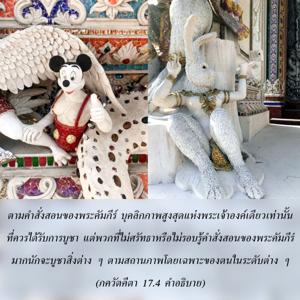
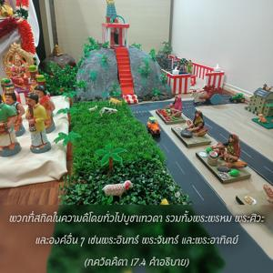
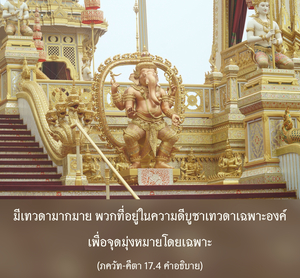

มนุษย์ในระดับความดีบูชาเทวดา พวกที่อยู่ในระดับตัณหาบูชามาร และพวกที่อยู่ในระดับอวิชชาบูชาภูตผีและดวงวิญญาณ



โศลกนี้บุคลิกภาพสูงสุดแห่งพระเจ้าทรงอธิบายผู้บูชาต่างๆ ตามกิจกรรมภายนอก ตามคำสั่งสอนของพระคัมภีร์ บุคลิกภาพสูงสุดแห่งพระเจ้าองค์เดียวเท่านั้นที่ควรได้รับการบูชา แต่พวกที่ไม่ศรัทธา หรือไม่รอบรู้คำสั่งสอนของพระคัมภีร์มากนักจะบูชาสิ่งต่างๆ ตามสถานภาพโดยเฉพาะของตนในระดับต่างๆ ของธรรมชาติวัตถุ พวกที่สถิตในความดีโดยทั่วไปบูชาเทวดารวมทั้งพระพรหม พระศิวะ และองค์อื่นๆ เช่น พระอินทร์ พระจันทร์ และพระอาทิตย์ มีเทวดามากมาย พวกที่อยู่ในความดีบูชาเทวดาเฉพาะองค์ เพื่อจุดมุ่งหมายโดยเฉพาะ พวกที่อยู่ในระดับตัณหาบูชามาร เราคงจำได้ว่าระหว่างสงครามโลกครั้งที่สอง ชายผู้หนึ่งที่กัลกัตตาบูชาฮิตเลอร์ด้วยความรู้สึกขอบคุณสงครามที่ทำให้เขาร่ำรวยมหาศาลกับการทำธุรกิจในตลาดมืด ในทำนองเดียวกัน พวกที่อยู่ในระดับตัณหา และอวิชชาโดยทั่วไปจะเลือกมนุษย์ผู้มีอำนาจเป็นพระเจ้า โดยคิดว่าบูชาผู้ใดในฐานะที่เป็นพระเจ้าก็ได้ แล้วจะบรรลุผลเช่นเดียวกัน
ได้อธิบายไว้อย่างชัดเจนตรงนี้ว่า พวกที่อยู่ในระดับตัณหาบูชา และสร้างเทพเหล่านี้ พวกที่อยู่ในระดับอวิชชา ในความมืดบูชาดวงวิญญาณที่ตายไปแล้ว บางครั้งผู้คนบูชาสุสานของคนตาย การบริการทางเพศพิจารณาว่าอยู่ในระดับความมืดเช่นเดียวกัน ในทำนองเดียวกัน หมู่บ้านชนบทในประเทศอินเดียมีคนบูชาภูตผี เราพบว่าในประเทศอินเดียบางครั้งชนชั้นที่ต่ำไปในป่า และหากรู้ว่ามีผีอยู่ในต้นไม้ก็จะบูชาต้นไม้ และถวายเครื่องสังเวย การบูชาต่างๆ เหล่านี้ไม่ใช่เป็นการบูชาองค์ภควานฺที่แท้จริง การบูชาองค์ภควานฺมีไว้สำหรับบุคคลที่สถิตในระดับทิพย์อยู่ในความดีบริสุทธิ์ ใน ศฺรีมทฺ-ภาควตมฺ (4.3.23) กล่าวไว้ว่า สตฺตฺวํ วิศุทฺธํ วสุเทว-ศพฺทิตมฺ “เมื่อมนุษย์สถิตในความดีบริสุทธิ์ เขาจะบูชา วาสุเทว” คำแปลก็คือ พวกที่บริสุทธิ์จากระดับแห่งธรรมชาติวัตถุโดยสมบูรณ์ และสถิตในระดับทิพย์จะบูชาองค์ภควานฺ
พวกไม่เชื่อในรูปลักษณ์ถือว่าสถิตในระดับความดี และบูชาเทวดาห้าประเภท คือ บูชาองค์วิษฺณุที่ไร้รูปลักษณ์ในรูปของโลกวัตถุ ซึ่งรู้กันในชื่อปรัชญา วิษฺณุ พระวิษฺณุทรงเป็นภาคแบ่งแยกขององค์ภควานฺ แต่พวกไม่เชื่อในรูปลักษณ์ เพราะพวกเขาไม่เชื่อในบุคลิกภาพสูงสุดแห่งพระเจ้า พวกเขาจึงจินตนาการว่ารูปลักษณ์ของพระวิษฺณุก็เหมือนอีกมุมหนึ่งของ พฺรหฺมนฺ ที่ไร้รูปลักษณ์ ในทำนองเดียวกัน พวกนี้จะจินตนาการว่าพระพรหมก็ไร้รูปลักษณ์ และอยู่ในระดับตัณหาทางวัตถุ บางครั้งพวกเขาอธิบายถึงเทพห้าประเภทที่บูชาได้ แต่เนื่องจากคิดว่าสัจธรรมคือ พฺรหฺมนฺ อันไร้รูปลักษณ์ จึงกำจัดรูปบูชาออกทั้งหมดในตอนจบ สรุปก็คือ คุณลักษณะต่างๆ ของระดับแห่งธรรมชาติวัตถุสามารถทำให้บริสุทธิ์ได้จากการมาคบหาสมาคมกับบุคคลผู้อยู่ในธรรมชาติทิพย์